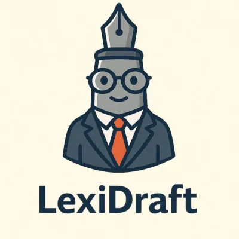

Student-facingLegal writing
LexiDraft
A specialist feedback and revision assistant for advanced legal writing, piloted in Honours and selected capstone units. It is designed to support students' own analysis and writing rather than replace it.